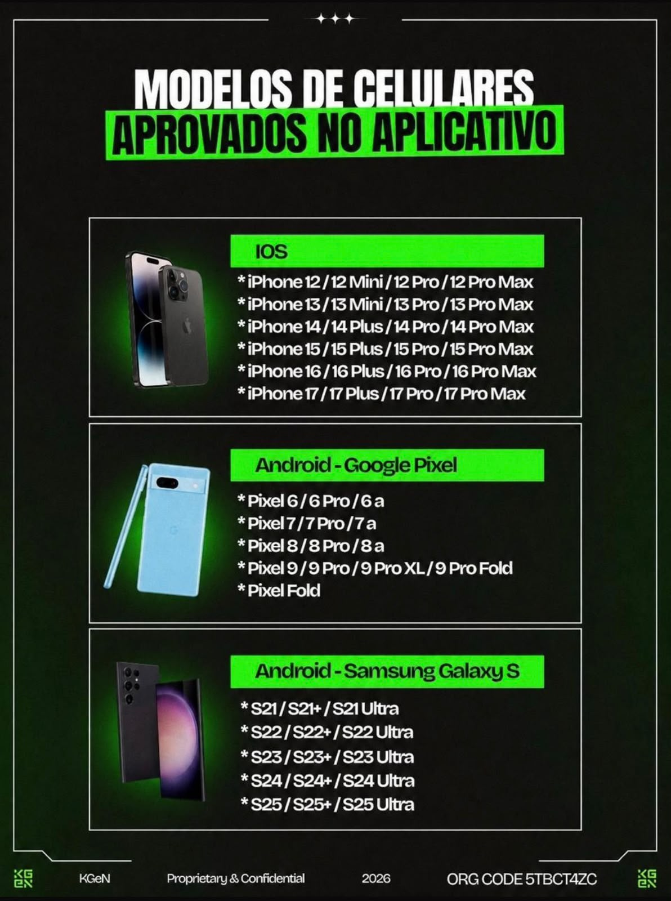

Descubra como ganhar em dólar realizando tarefas do dia a dia pelo celular
Veja como funciona e descubra como participar gratuitamente, usando seu próprio celular para realizar tarefas domésticas.
Ganhe até U$10 dólares a cada 1 hora
Os resultados podem variar de pessoa para pessoa.
Como começar
Primeiro você faz o cadastro na KGeN, depois baixa o aplicativo MINUTE DATA. Siga os passos abaixo.
-
01
Faça seu cadastro na KGeN
-
02
Baixe o aplicativo MINUTE DATA
-
03
Ative o aplicativo usando o código de convite
-
04
Siga as orientações para realizar as tarefas
-
05
Acompanhe seus resultados pela carteira
Baixe o Minute Data
Depois de realizar seu cadastro na KGeN, baixe o aplicativo MINUTE DATA de acordo com o seu celular.
Importante: ative seu aplicativo
Ao entrar no aplicativo MINUTE DATA, utilize o código de convite abaixo para ativar o aplicativo:
Código copiado!
Seu celular é compatível?
Confira os modelos de celulares aprovados para realizar as tarefas.

Caso seu celular não seja compatível para realizar as tarefas, não se preocupe! É possível ganhar em dólar com indicações de pessoas.
Tenha o suporte de cabeça correto para gravar
Para realizar as gravações das tarefas, utilize o suporte de cabeça mostrado na imagem.
Atenção
Use o modelo de suporte indicado na imagem. O suporte é utilizado para manter o celular na posição correta durante a gravação das tarefas.
Ainda não tem o suporte?
Se você ainda não possui o suporte, confira o modelo indicado abaixo.
Comprar suporteConsulte as condições de entrega no anúncio. A previsão informada é de até 3 dias úteis.
Acompanhe sua carteira
Para acessar sua carteira e acompanhar informações como saldo e bônus, acesse a área de tarefas da KGeN pelo seu celular.
Acessar minha carteiraEntre no nosso canal do WhatsApp
Entre no Canal do WhatsApp para acompanhar tudo sobre tarefas, ganhos, bônus, novidades e atualizações.
Entrar no canal do WhatsApp